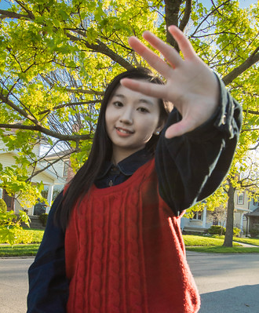

My name is Xinyi Zheng. I'm a student of digital media and I like various forms of visual creation. I spend most of my free time taking photos, editing videos and designing graphic works. Outdoor natural light scenes like those in my photos are my favorite shooting style♥.
I am proficient in multiple design software, including Photoshop, Illustrator and Premiere Pro. I am always eager to learn new creative tools, and creating an HTML homepage was my first step into web design.
Apart from studying, my favorite things include watching movies, listening to music, drawing, or going out to play with friends occasionally.
I'm a bit slow to warm up. I tend to be reserved towards strangers but become more cheerful once I get to know them. Usually, I enjoy having some alone time.
You can visit my favorite site here: Pinterest
This page was made for my first web design assignment.